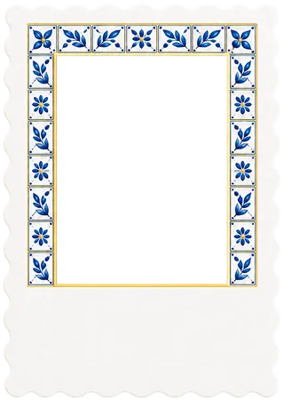

We're getting married
&
·
–Days
–Hours
–Minutes
–Seconds
Today is the day — we're celebrating!
Thank you for celebrating with us.

We're getting married
·
Today is the day — we're celebrating!
Thank you for celebrating with us.